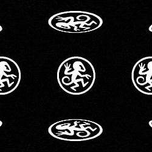
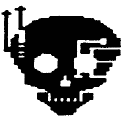
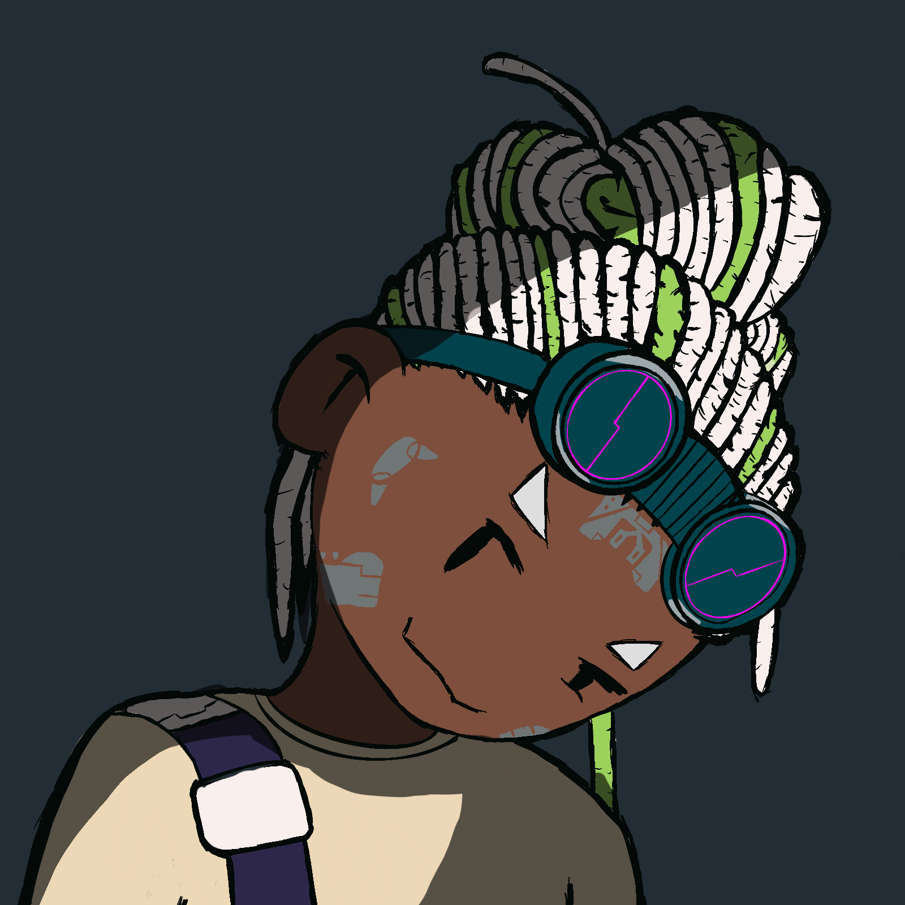

If you want to interact with the community here on the site, join our Discord.
This is your gateway to the retro social scene. Dive into profiles, updates, and works by your favorite artists. Each link takes you deeper into Project Radio’s creative orbit.
The Artist Uplink is a creative hub built for artists, by artists. It’s a place to share your work, connect with others, and discover fresh inspiration. Every month, we feature a new lineup of talented creators, shining a spotlight on diverse styles and voices from the community.

Miles DeVoe
Florida Jungle
This months spotlight and the first one of 2026 is Miles Devoe! A Florida based producer drawing from the raw energy and optimism of 90s UK jungle, drum & bass, and atmospheric IDM. Growing up on Aphex Twin, Daft Punk, Boards of Canada, and Justice, his early exposure to forward thinking electronic music, along with UK leaning internet culture, helped shape a sound built on breakbeats, deep atmospheres, and rave futurism. Check out his spotlight article here and make sure to check out his profile page too!


Miku Vandal!


CHECK OUT MY NEW ALBUM RIOTRAPS*! NOW! LISTEN HERE